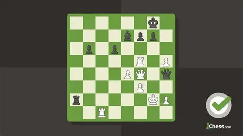
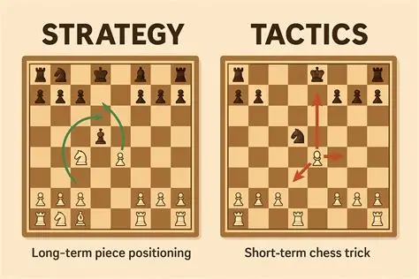
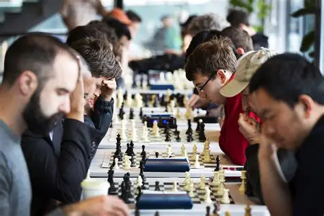

Purposes and Activities Offered
The purpose of the Chess Club is to help students develop critical thinking and decision-making skills through chess. The club encourages students to think ahead, learn from their mistakes, and develop patience and concentration.
Members participate in chess practice sessions, friendly matches, strategy lessons, and chess tournaments. Students can learn new openings, practice different strategies, and challenge their classmates to improve their skills.

Club Advisor And Requirements
Mr. Leander Campos helps students learn chess strategies and encourages members to improve their concentration, critical thinking, and decision-making skills.
Students should have an interest in chess and be willing to learn and improve their skills. Members should attend regular meetings, participate in chess activities, and show good sportsmanship when playing against others.

Chess Practice
Members participate in regular chess sessions where they can practice against other students and improve their understanding of the game. These sessions help students become more comfortable with different strategies and develop their decision-making skills.

Strategy Lessons
Students learn different chess strategies, openings, and tactics that can help them during games. Members practice these techniques and learn how to think ahead and make better decisions on the chessboard.

Chess Tournament
Members participate in friendly chess tournaments where they can compete against other students. These events give students an opportunity to test their skills, gain experience, and enjoy some friendly competition.